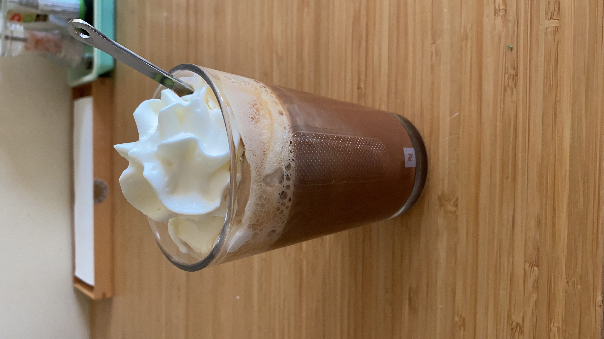

Mocha

Homemade Mocha
This is my quick and easy recipe for a Mocha at home. It sweet, chocolatey with just the right amount of coffee.
Making this sweet drink is especially easy if you already have a coffee machine at home but no worries, you can still make it with any other coffe making devide you have on hand. The key is to have a strong enough coffee that you don't mind using in a mix.
Ingredients (for 1 cup)
- 100ml strong coffee (I use Stockholm by Nespresso)
- Condensed milk or sweetener of choice
- 200ml milk of choice (I use oat milk)
- 3 to 4 teaspoons of hot chocolate mix (Van Houten Bistro)
- Optional: whipcream
Steps
- Get a cup and cover the bottom in condensed milk or your choice of sweetener.
- Then pour warm coffee over it and mix really well.
- Warm up the milk to your desired temperature (I do 1.30min in the microwave).
- Add hot chocolate mix to the milk and mix well.
- Pour the chocolate mixture over the coffee mixture and mix well.
- Top with whipcream fir extra sweetness and creaminess.
And here is your delicious warm mocha to enjoy in the comfort of your home!